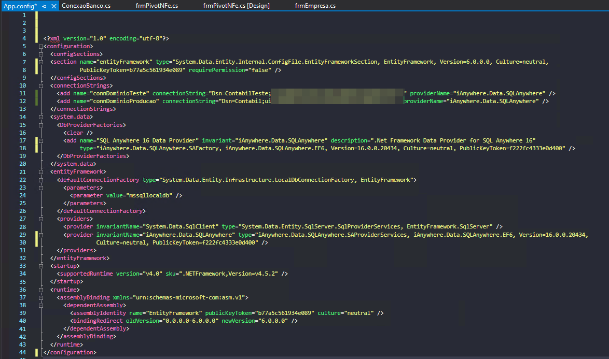

A Domínio Sistema utiliza o banco de dados SQL Anywhere 16. Para acessá-lo via Entity Framework 6 (não há suporte para EF Core) é necessário configurar alguns elementos no Visual Studio
As configurações consistem em adicionar o EntityFramework e configurar o provider de acesso ao iAnyWhere
OBS.: importante lembrar que EF utiliza o arquivo de configuração (app.config) relativo ao projeto de inicialização. Isto é, caso sua base de dados seja uma class library, pouco importará a configuração do AppConfig.
Adicionar/Instalar o EntityFramework 6 em ambos projetos. Na class library para dar suport ao DbContext, Mapping e DbSet. E no projeto de apresentação, para que possa acessar os dados.
O App.config a ser configurado é o do projeto de execução. A principal configuração refere-se ao providers de acesso. No caso, deverá ser incluido no DbProvidersFactories e no Provider a biblioteca do iAnyWhere.Data.SQLAnywhere.
O arquivo final deverá ser tal qual imagem abaixo:
Os passos acima são suficientes para funcionar o projeto. Não precisa instalar nenhuma depedencia do IAnyWhere. Contudo, na máquina testada (PC Ettore) está instalado o banco de dados Sybase SQL Anywhere. Logo, o arquivo do provider (iAnyWhere) foi baixado junto. Logo, ao usar no Visual Studio, bastou executar o processo de SetupVSPackage.exe /i, via terminal de comando.
Essa operação está descrita na seguinte documentação SQL Anywhere .NET Data Provider removal
O arquivo final deverá ser tal qual imagem abaixo: